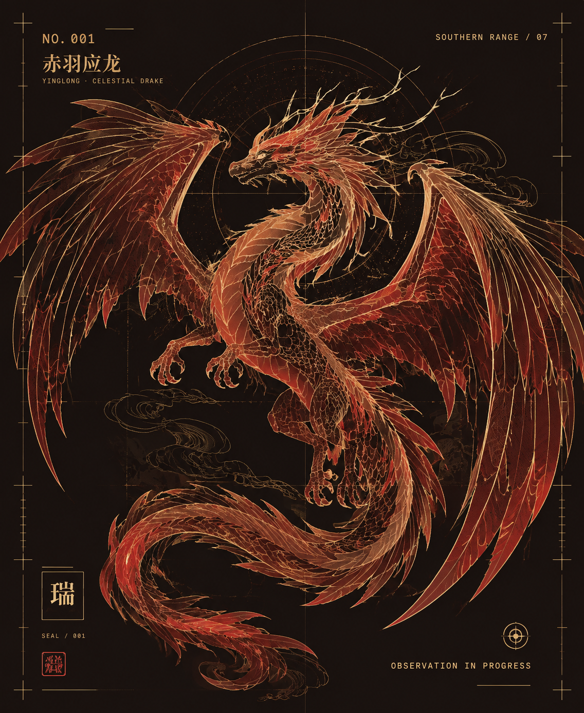

志怪小说的母题之河
《搜神记》《西游记》《聊斋志异》中的精怪、远国与异闻，多可追溯至《山海经》的叙事胚胎。
山海档案局 · 序厅 · 一座收藏上古异兽的数字博物馆
NO. 001 / 南山经·南次三经
甲级观测对象
YINGLONG · CELESTIAL DRAKE
生于赤水之北，翼展如云，鳞甲映日若熔金。古卷称其能行云布雨，司四方水脉之变。

SELECT SPECIMEN
未检索到匹配的异兽档案
ABOUT THE CLASSIC / 关于山海经
《山海经》是中国先秦重要古籍，作者与成书年代已不可考。它并非一人一时之作，而是先民对天下山川、神祇异兽与远方国族的集体记忆，自战国至汉初陆续编成，经刘歆校订而传世。
鲁迅先生评其为「盖古之巫书也」—— 山川、神祇、异物、远方，皆在尺幅之间。
其内容横跨地理、神话、巫术、宗教、古史、医药与民俗，不仅奠定了后世志怪小说的母题，更成为研究上古信仰与天下观的珍贵文献。本站以数字之形，重现其中异兽之一隅。
CARTOGRAPHIC SYSTEM / 地理分卷
《山海经》依方位列卷，先述五方诸山，再及四海大荒。本站以数字罗盘重绘其经纬，点选已收录的经部，即可调阅对应异兽档案。
ASTRAL GEOGRAPHY / 06 SEALED MARKERS
PRIMEVAL NARRATIVES / 上古神话
《山海经》不仅记录异兽，更封存着先民面对自然与命运时最炽烈的故事。以下三则，皆自原典节录、以今语重述——精卫、夸父、刑天，是中国神话里"知其不可而为之"的三道侧影。轻点卷轴，展开全屏阅读。
CULTURAL LEGACY / 后世回响
从志怪小说的母题源头，到当代国风影视与游戏，再到历代校注的学术长河，《山海经》的异兽与神话始终是中华文明想象力的底层坐标。
《搜神记》《西游记》《聊斋志异》中的精怪、远国与异闻，多可追溯至《山海经》的叙事胚胎。
近年动画、影视与游戏中，应龙、精卫填海等意象被反复借用，成为东方奇幻的视觉母本。
郭璞首注，毕沅、郝懿行、袁珂续考，历代学者在地理、神话与民俗之间不断重读这部奇书。
历代校注脉络